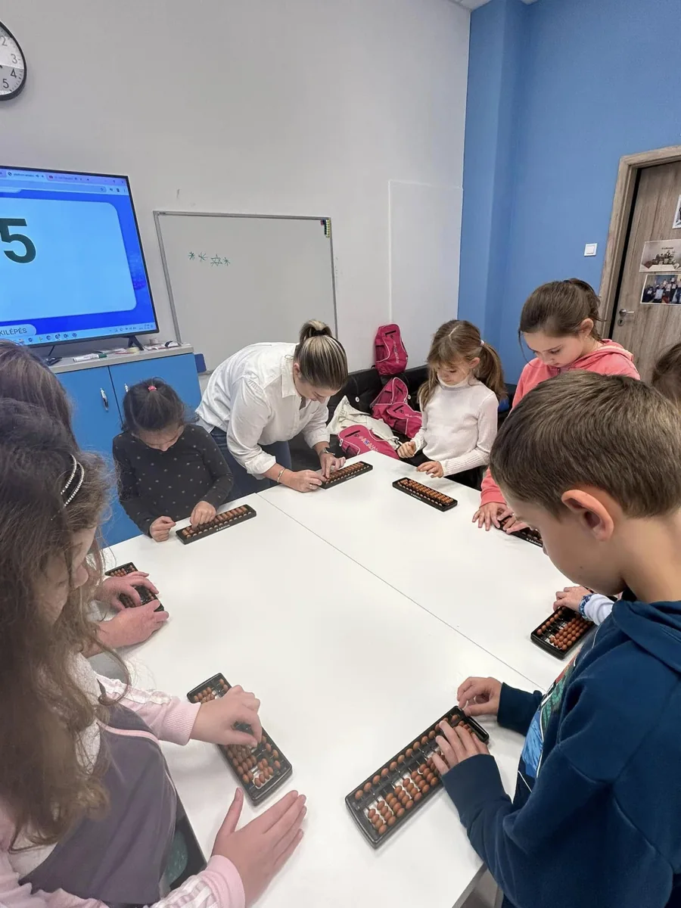

Junior Ages 5–10
- Ages 5–6
- 2 × 35 min
- Ages 7–10
- 2 × 45 min
From the abacus to mental calculation.
Children learn to calculate with a physical abacus, then use a mental image of it to solve problems. AMAkids brings together a structured curriculum, teacher-led classes and digital practice.

Both tracks start with addition and subtraction and continue with multiplication and division. The youngest learners have shorter lesson blocks and age-adapted materials.
Typical schedule: one weekly meeting with two lesson blocks and a short break. Check local availability and scheduling with your provider.
Students work with the physical abacus and practise visualizing the beads as they develop mental calculation skills.
Digital exercises and games help students revisit what they worked on in class.
Teachers can review homework activity and results to see where a learner needs more practice.

Add a structured enrichment program to an existing school or center, or build it into a new AMAkids business.
Prepare to teach the AMAkids method using course-specific training and ready-to-use resources.
See what students are working on as they move from using the abacus to solving calculations mentally.
It is an enrichment program focused on abacus-based and mental calculation. Students continue to use the calculation methods taught in their regular math classes.
Teachers can deliver the course after completing the relevant AMAkids training. Ask about the available training languages and materials for your market.
AMAkids offers in-person and online formats. Availability depends on your location and local provider.
Teachers can review practice activity and exercise results on the platform and share what a child is working on and what needs more practice.
Talk to AMAkids about delivering the course, or find a local provider for your child.